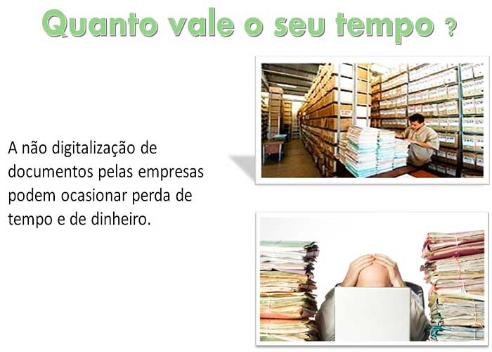

Estima-se que um funcionário gasta mais ou menos 20% do seu tempo para achar um documento.
Isso dá mais ou menos 520 horas por ano.
Uma pesquisa feita pela (Associação Brasileira das Empresas de Gerenciamento de Documentos) aponta que, a cada 12 segundos, isso mesmo, a cada 12 segundos ao menos um documento é perdido nas empresas brasileiras.
Quando colocamos esses números num caderno e somamos, o resultado é impressionante não é mesmo?! Eu mesmo não fazia ideia do tempo e dinheiro que desperdiçamos arquivando tudo em papel.
Com esses dados em mãos, tem empresas que estão optando por digitalizar seus arquivos. As vezes ela mesmo faz esse processo em sua sede, ou recorrem a terceirizados. Várias pessoas enxergaram nessa necessidade, uma grande oportunidade, por isso hoje temos muitas opções de empresas especializadas em digitalização de arquivos.
E não precisa de muita coisa para se abrir uma empresa desse seguimento.
Irei agora abordar alguns pontos mais importantes para quem queira começar a digitalizar ou até mesmo abrir sua própria empresa de digitalização.
Primeiro Scanner - O scanner é utilizado para a digitalização e os arquivos são processados em uma unidade servidora. A partir desta unidade se realiza a distribuição, impressão de cópias e armazenamento. Tem um modelo padrão, o modelo de scanner apropriado para o seu negócio vai depender da velocidade e volume que você pretende entregar ao seu cliente.
Segundo ponto, Um computador com acesso à internet para fazer as consultas dos documentos compartilhados em rede, sendo que nesses, também é feita a criação de documentos de origem digital.
Terceiro Software GED. Para fazer automação documental. Acesso rápido através de navegadores com segurança e validade jurídica. Dependendo do software que você escolher, você poderá oferecer o serviço em qualquer lugar que você esteja.
E por último, mas não menos importante é ter CONHECIMENTO. Para lidar com esse tipo de software, é preciso ter conhecimento sobre gestão de documentos e a melhor forma de realizar o planejamento e execução da implantação, de acordo com a estrutura e as necessidades de cada empresa.